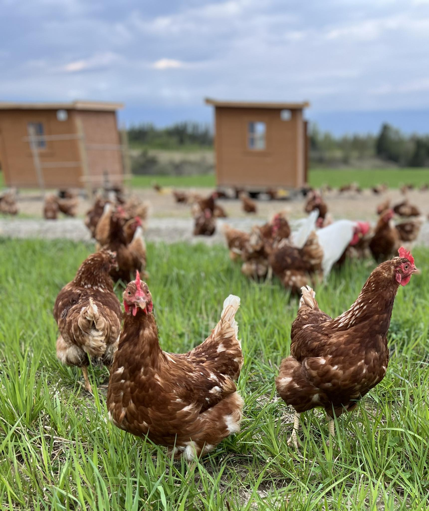
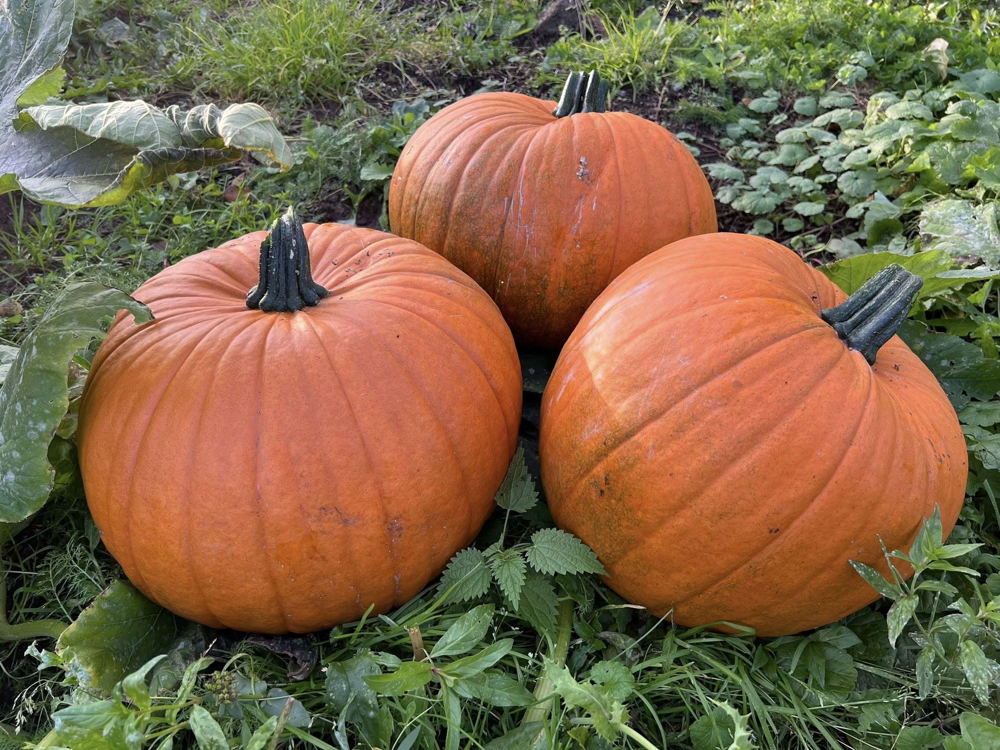

I gårdsbutikken selger vi produkter fra både egen gård og andre lokale gårder – produsert med kjærlighet og omsorg for både dyr og natur. Velkommen!
Gårdsbutikken er selvbetjent, og åpen fra tidlig til sent.


Våre høner går fritt på beite store deler av året. Eggene har kraftig gule plommer og en rik smak – perfekt til frokost eller baking.
Kjøtt fra geiter som har levd et godt liv på beite ved Glomma. Mørt, smakfullt og produsert med respekt for dyrene.
Honning fra våre tre bikuber, strategisk plassert ved Glomma. En naturlig sødme fra blomstene i nærområdet.
Telefon: 988 16 111
E-post: espen@fladmarkgard.no